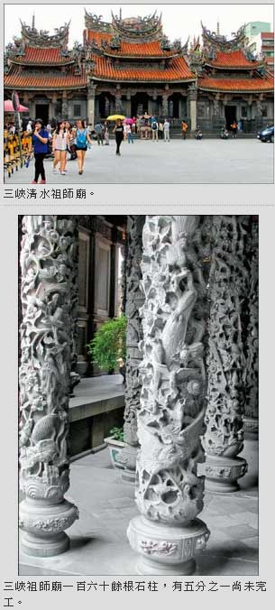

三峽的古廟和大腳丫
吳敏顯｜自由時報／副刊｜2015年8月31日
神采奕奕的古廟
老與古，通常與舊字攪和一塊兒，可三峽老街和清水祖師廟不但不顯老舊古舊，還精神抖擻，神采奕奕。
台灣有很多廟宇，彼此像比賽輸贏那樣去興建，整修、擴建、重建，皆不惜花大錢鑲金框銀，購買幾百公斤純金打造神像。彷彿只要把廟宇蓋得豪華氣派，神像鑄造得金光閃閃，就愈顯靈聖。
這種風氣，應當與現代人急功近利相關，經辦任何事情率先考量效率速成，很少去講究多琢磨多下點功夫。修路搭橋建屋蓋廟如此，幾乎連文學藝術創作、男女情愛及日常一切，統統如此，少有例外。
常見一般廟宇，不管木雕、石雕、銅雕，無論龍柱、石獅、石鼓、藻井、斗拱、繡球、花籃吊筒，大多用模子翻鑄，並非一刀一鑿仔細雕鏤。
創建於清朝乾隆年間的三峽清水祖師廟──長福巖，在滿清末年被大地震震垮，重建後又遭日本軍隊燒毀。到民國36年始由老畫家李梅樹發起建造，且親自督工進行第三次重建。
這座五門三殿九開間的祖師廟，重建工程迄今已超過一甲子，目前仍持續施工中。單以廊道上設計的一百六十四根石雕柱子為例，就有三十餘根未完成。
在西班牙巴塞隆納的聖家堂，由藝術家高第（Antoni Gaudi i Cornet，1852-1926）設計建造後蓋了一百多年，到今天尚未完工，令世人嘖嘖稱奇。沒想到，我們三峽祖師廟也持續蓋了將近七十年歲月。
廟裡木雕部分，採用檜木和樟木，並以整塊木料或整根原木雕鏤，再貼上金箔；而石雕、銅雕所雕刻的歷史掌故，以及鳥獸蟲魚，則全部出自名家之手。要是肯花時間仔細觀賞，你會看到水裡的章魚、烏賊、青蛙，陸地上的火雞、狼狗、兔子、熊、穿山甲、貓頭鷹……相繼跑來廟裡玩耍，連螃蟹都爬到石柱的礎石上點頭稱「謝」。
許多專家學者參觀祖師廟後，紛紛肯定它是一座陳列雕刻精品的博物館，呈現傳統文化的藝術館，形容它是一座東方藝術殿堂。
很久沒用過雕梁畫棟、金碧輝煌、精雕細琢、鬼斧神工等等辭彙。到了三峽祖師廟，無論站在廟埕遠看，或進入廟裡瞻仰，努力尋思半天，卻始終想不出比這些更簡省、更精準的形容詞。
原始雨林的大腳丫
在三峽南端，有一片廣達十七公頃的自然生態園區，人們叫它大板根。它是全台灣獨特的低海拔亞熱帶原始雨林。
板根本是植物根系分類之一種，如同球根、纏勒根、支持根、氣生根等等。大板根三個字，從字面看帶點土氣，除了明白告知有板根林木生長，久而久之便替代當地地名。
樹木沒讀過書，不曾認識牛頓這號人物，當然不懂得什麼叫地心引力。但它們一旦身處土質淺薄鬆軟的斜坡，或面臨陡峭山溝，為求生存必須設法挺住自己，不能跌倒翻觔斗。自救之道，只能學人們勤練氣功、甩手功、蛤蟆功、蹲馬步，拚老命穩住下盤。於是在樹下形成板根，宛如樹木長了大腳丫，然後拚命伸出腳掌、張開腳趾，與腳下土地拔河。
大板根這片亞熱帶雨林，海拔不到三百公尺，卻住了六百種以上植物，棲息幾千種昆蟲和數不清的鳥類，一年四季熱鬧非凡。雨林中三條環狀步道，路程各有長短，方便遊客挑選。
我和絕大多數遊客一樣，面對植物、鳥類或昆蟲，記憶庫能翻到的檔案，僅剩小學自然課本。像茄冬、筆筒樹、相思仔、樟仔、榕樹、椰子樹等少數經常碰面的老友之外，其他皆歸類於大樹小樹，這棵樹那棵樹，或歪著脖子、彎著腰的樹。對蝴蝶、蜜蜂、飛鳥，也僅止於用其形體模樣和顏色做區隔。
照說應該帶本植物圖鑑，或許讓自己有所長進，好在這回最吸引我的是幾株長著大腳丫的綠巨人。其中有棵九丁榕被稱為「板根之王」，根部隆起突出地面一百八十公分，不輸壯漢身高，任何人緊挨著它就可以躲貓貓。另外，貼著步道讓人得以親近的大腳丫族群，還有大葉楠、幹花榕，同屬大家讚歎的對象。
當我伸長手臂，想偷偷觸摸那筋肉緊繃、長扁細瘦而高聳的腳趾時，抬頭便瞧見枝葉展露笑容。九丁榕甚至模仿我們鄉下老農夫的口氣，告訴我說：「樹頭站得穩，就不怕樹尾做風颱。」
朋友說，九丁榕這麼老了肯定健忘，才樂於成天閉上眼睛，盤坐地上打禪七。可當我舉起相機，設法以各種角度取景時，卻發現它並不老，像極了風韻猶存的貴婦，穿著一襲多縐褶的拖地長裙，正跟隨天籟緩緩地跳著圓舞曲。
雨林裡所有樹葉，逐一化成蝴蝶，不停地拍打翅膀，在空氣中散發清香，鼓盪我心緒。遺憾的是這輩子沒學會跳舞，此刻只能幻想自己變成一隻猴子，用長長的手腳和尾巴，抓住樹林裡纏繞糾結的爬藤，盪過來盪過去。藤蔓愛現愛串門子又愛撩人，頂適合做為表演特技的舞台。
而幻想畢竟不切實際。迎面而來那座吊橋，狹窄老舊，猴子抓住布滿鏽斑的纜繩，才瞧見自己踩踏前進的橋板，僅由兩根細窄橫木捆綁成一組，然後一組一組像整排鞦韆，大約每間隔二十來公分吊掛一組，一路排開前行，迫使你必須邊走邊盯住腳下深深的溪谷。
最可怕的景象，莫過於有些橫木腐朽殘缺，這時再想學猴子攀爬擺盪，為時已晚。左腳跨出右腳跟上，右腳跨出左腳跟上，一步一步輪番跨出去，總算踩到對岸。嘿，原先埋伏在膝蓋裡很長一段時日且動輒搗亂作怪的痠痛，這回果然被驚嚇得不敢露臉。
再定下神，才發覺過橋當時全部噤聲的樹木和蟲鳥，瞬間聚在自己眼前耳畔拍手叫好，傳唱愉悅的笑聲和歌聲。
在收攏四處遊蕩心思那一刻，我不得不思考自己是否只描述了三峽一點皮相呢？它還有老街、老畫家的紀念館、溫泉，藍染、茶園和美食呀！
天氣酷熱，就容我慢慢回頭去想它，慢慢去寫它吧！